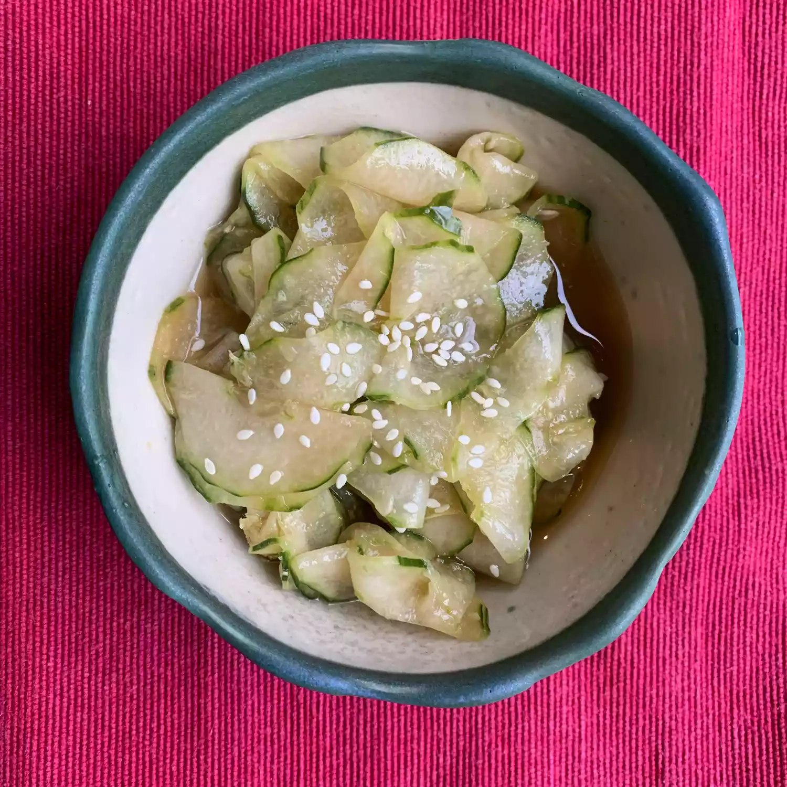

Sunomono

Description
Cucumber sunomono is a tasty Japanese cucumber salad made with just a few easy-to-find ingredients. Serve this as a Japanese appetizer, or as a salad or side dish to pair with any meal. Nice for a summer BBQ!
Ingredients:
- 2 large cucumbers (Persian)
- 1 teaspoon salt
- 4 teaspoons white sugar
- 1 ½ teaspoons minced fresh ginger root
- 5 tablespoons rice vinegar
- 1 tablespoon soy sauce
- 2 teaspoons sesame seeds, or to taste
Steps:
- Peel 4 strips off each cucumber using a vegetable peeler, leaving some of the peel in place for a striped look. Slice off the ends and cut cucumbers in half lengthwise.
- Slice cucumbers into very thin slices using a mandoline, or carefully with a knife. Place in a bowl and sprinkle with salt. Stir until well combined and set aside for 5 minutes.
- Meanwhile, whisk sugar, ginger, vinegar, and soy sauce in a bowl until well combined.
- Squeeze excess liquid out of cucumbers using your hands or a clean tea towel. Toss cucumbers with the dressing. Stir well and chill in the refrigerator for 1 hour before serving.
- Just before serving, sprinkle each portion with sesame seeds. Enjoy!